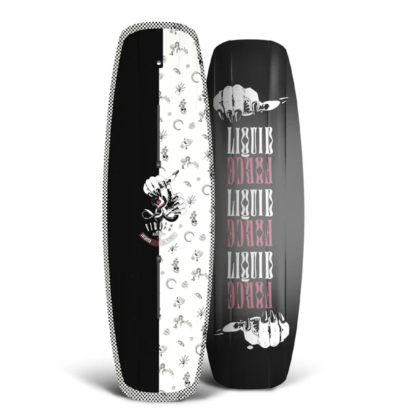
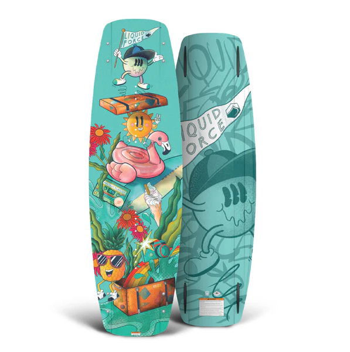

Tabla para Parque
- Flexibilidad: las tablas dedicadas a un uso en los cable parks tienen patrones de flexión más altos con el fin de proporcionar mayor sensibilidad sobre los obstáculos, pudiendo presionar la punta o la cola de la tabla sobre los modulos con naturalidad y por ultimo absorber mejor los aterrizajes en el plano.
- Menor Rocker/Curvatura: tienden a poseer un menor rocker o curva de tabla menos pronunciada que las de lancha, garantizando menor fricción con el agua a menor velocidad, reflejándose en un menor esfuerzo para deslizarse sobre el agua.
- Fondo Plano: suelen tener canales de tracción más sutiles en la base, lo suficiente para mantener al rider en control en todo momento y lograr ollies más altos. Algunas poseen fondos planos en búsqueda de una sensación de mayor libertad sobre el agua aunque estarás sacrificando tracción y control.
- Cantos de ABS: posen cantos perimetrales de ABS laterales reforzadas para resistir el abuso de la conducción diaria en el parque, haciendo de los bordes la zona mas fuerte y no la mas débil.
- Largo: debido a que en los cable parks, la velocidad es menor a la de la lancha, se recomienda utilizar tablas mas largas. Esto es debido a que a menor velocidad, se requiere mayor superficie de apoyo y sustentación. De lo contrario, vas a hundirte mas fácilmente en el agua, realizando un mayor esfuerzo para lograr los mismos resultados que con una tabla mas larga. Las tablas con mayor superficie de apoyo ofrecen mayor estabilidad y control con un menor esfuerzo. Podrás rendir el doble, cansarte menos y sentir un menor dolor en tus articulaciones.

Tabla para Lancha
- Mayor Rigidez: tienen patrones de flexión más rígidos, lo que les proporciona mayor energía a medida que subes la transición de la estela y te elevas a través de su pico más alto.
- Mayor Rocker/Curvatura: tienden a poseer un rocker o curvatura más pronunciada que las de cable, para poder transitar a lo largo de toda la curva de la ola de la lancha sin clavarse dentro de ella.
- Canales de Tracción: suelen tener canales de tracción más pronunciados en la base, que pueden ayudar a acercarse mejor a la estela y / o suavizar los aterrizajes.
- Quillas: vienen con una serie de quillas que pueden venir pre moldeadas en la base y/o plásticas desmontables, normalmente en su centro para mayor tracción y control.
- Largo de tabla: son levemente mas cortas que las de cable. Al ser remolcado a mayor velocidad, se acorta el largo y se le agregan quillas para lograr tracción y control.